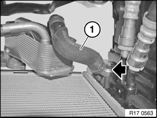
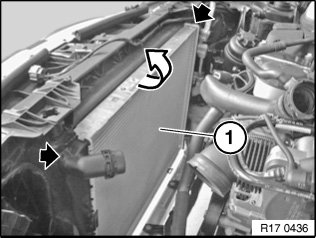

Removing and Installing Radiator
17 11 000 Removing and installing radiator (N43, N45, N46, N52, N52K, N53)Warning!
Danger of scalding!
Only perform this work after engine has cooled down.
Necessary preliminary tasks:
^ Follow instructions for working on cooling system
^ Remove intake duct
^ Remove intake filter housing
^ Remove fan cowl
^ Drain coolant
^ Unlock coolant hoses and detach
Automatic transmissions only:

Release bolt and detach hose (1).

Release screws.
Tightening torque 17 11 2AZ.
Remove radiator (1) towards top.